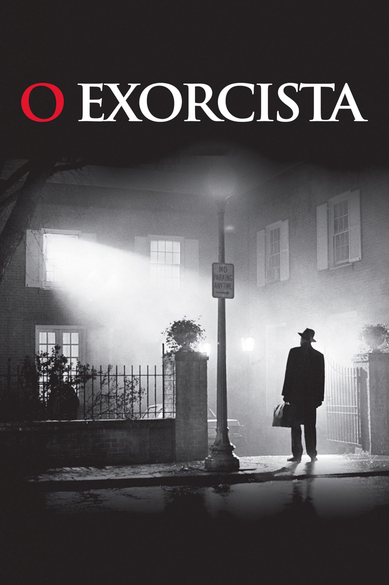

Diretor:
William Friedkin
Elenco:
Ellen Burstyn, Max von Sydow, Linda Blair
Faixa etária:
Não recomendado para menores de 18 anos
Lançamento:
11 de novembro de 1974
Gênero:
Terror, Suspense, Sobrenatural, Mistério.
Duração:
122 minutos
Sinopse:
Uma atriz vai gradativamente tomando consciência de que a sua filha de doze anos está tendo um comportamento completamente assustador. Deste modo, ela pede ajuda a um padre, que também é um psiquiatra, e este chega a conclusão de que a garota está possuída pelo demônio. Ele solicita então a ajuda de um segundo sacerdote, especialista em exorcismo, para tentar livrar a menina desta terrível possessão.